Publications
Table of Contents
Preprints
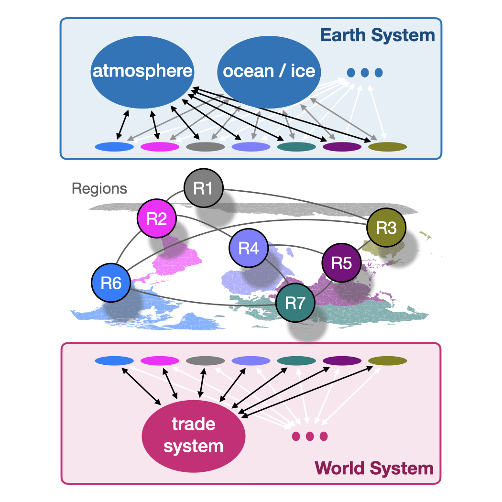
Conceptualizing World-Earth System resilience: Exploring transformation pathways towards a safe and just operating space for humanity
by Anderies JM, Barfuss W, Donges JF, Fetzer I, Heitzig J, Rockström J
in review
preprint
Peer-reviewed
2023
We show that intrinsic stochastic fluctuations make classical temporal-difference reinforcement learning with 𝜖-greedy strategies highly cooperative.
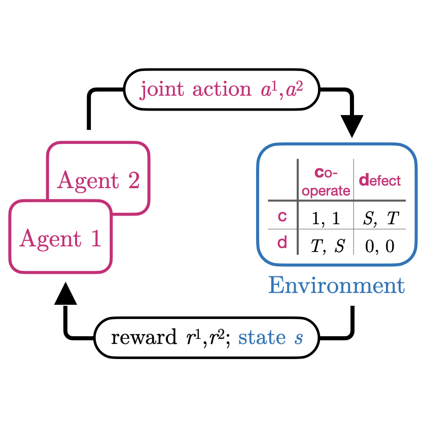
Intrinsic fluctuations of reinforcement learning promote cooperation
by Barfuss W, Meylahn J
in Sci Rep 13, 1309 (2023)
doi
preprint
code
zenodo
2022
We refined the dynamics of collective learning to account for agents with only partial observability or likewise uncertaint environments.
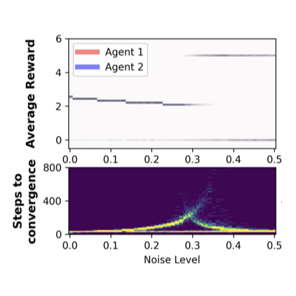
Modeling the effects of environmental and perceptual uncertainty using deterministic reinforcement learning dynamics with partial observability
by Barfuss W, Mann RP
in Physical Review E 105, 3, 034409 (2022)
doi
preprint
code
zenodo
I discuss how dynamical system models can form an intermedite level of abstraction for an improved understanding of multi-agent systems reinforcement learning.
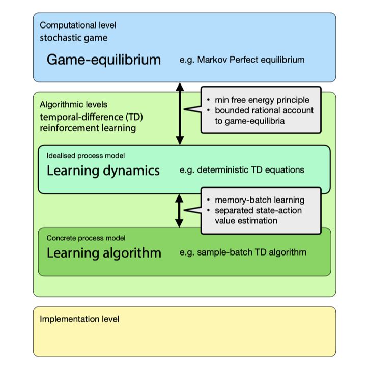
Dynamical systems as a level of cognitive analysis of multi-agent learning - Algorithmic foundations of temporal-difference learning dynamics
by Barfuss W
in Neural Computing & Applications 34, 1653-1671 (2022)
doi
code
zenodo
2021
We propose a system to bring order into modelling approaches for human-environment interactions up to the planetary scale.
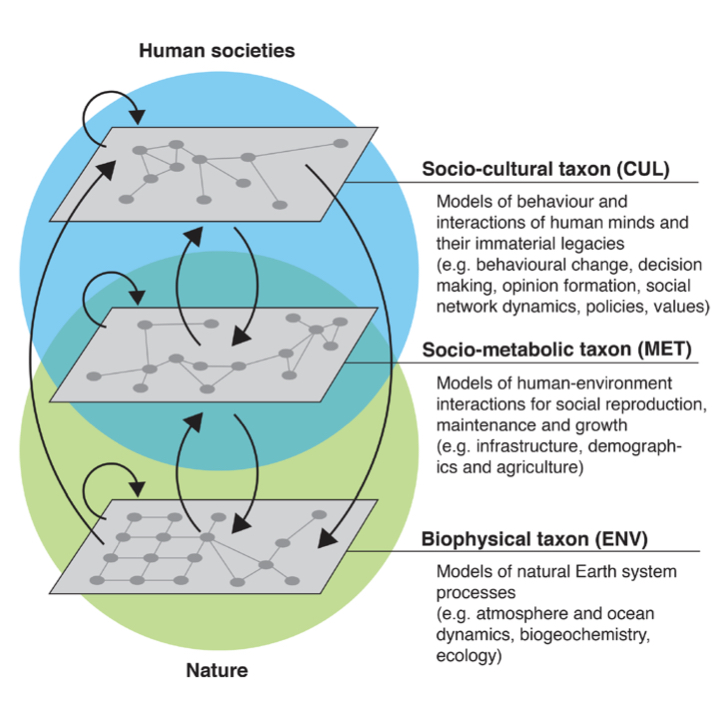
Taxonomies for structuring models for World-Earth system analysis of the Anthropocene: subsystems, their interactions and social-ecological feedback loops
by Donges JF, Lucht W, Cornell SE, Heitzig J, Barfuss W, Lade SJ, Schlüter M
in Earth System Dynamics 12, 1115–1137 (2021)
doi
We argue that the study of collective behavior must rise to a “crisis discipline” just as medicine, conservation, and climate science have, with a focus on providing actionable insight to policymakers and regulators for the stewardship of social systems.

Stewardship of global collective behavior
by Bak-Coleman J, Alfano M, Barfuss W, Bergstrom C, Centeno MA, Couzin ID, Donges JF, Galesic M, Gersick AS, Jacquet J, Kao A, Moran RE, Romanczuk P, Rubenstein DI, Tombak KJ, Van Bavel JJ, Weber EU
in Proc. Natl. Acad. Sci. U.S.A., 118(27), e2025764118 (2021)
doi
interview
I discuss questions how to bridge different perspective on modeling multi-agent reinforcement learning as dynamical systems.
Towards a unified treatment of the dynamics of collective learning
by Barfuss W
in AAAI Spring Symposium Challenges and Opportunities for Multi-Agent Reinforcement Learning (COMARL) (2021)
slides
2020
We show how caring for the future can transform a tragedy of the commons into a comedy even without any form of social reciprocity.

Caring for the future can turn tragedy into comedy for long-term collective action under risk of collapse
by Barfuss W, Donges JF, Vasconcelos VV, Kurths J, Levin SA
in Proc. Natl. Acad. Sci. U.S.A., 117(23), 12915-12922 (2020)
doi
code
zenodo
I show how multi-agent reinforcement learning dynamics model memory-batch learning agents with an infinite memory batch.
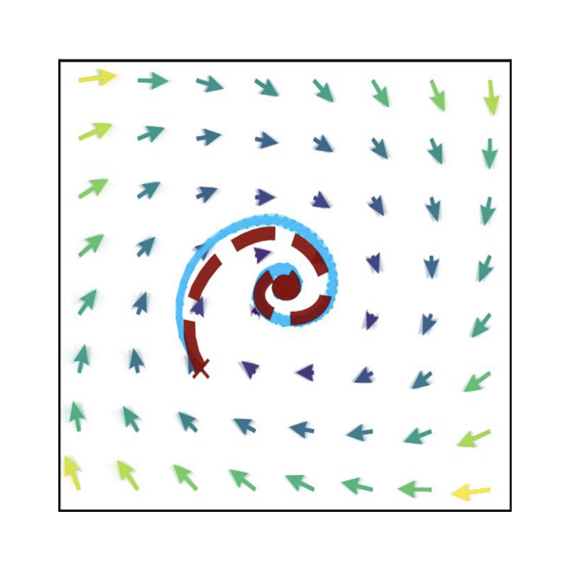
Reinforcement Learning Dynamics in the Infinite Memory Limit
by Barfuss W
in Proceedings of the 19th International Conference on Autonomous Agents and Multiagent Systems (AAMAS), Auckland, New Zealand, May 9–13 (2020)
We introduce a modeling framework for integrated human-environment modeling up to the planetary scale.
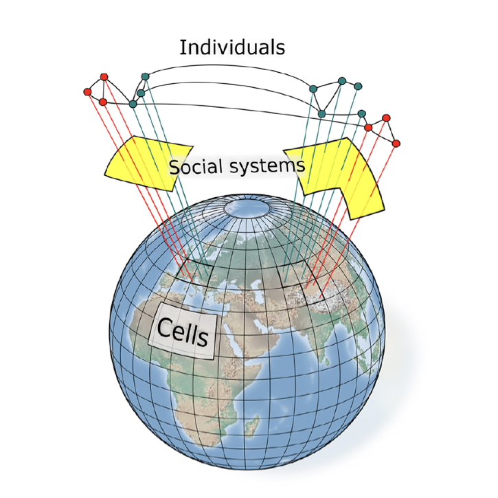
Earth system modeling with complex dynamic human societies: the copan:CORE World-Earth modeling framework
by Donges JF, Heitzig J, Barfuss W, Wiedermann M, Kassel JA, Kittel T, Kolb JJ, Kolster T, Müller-Hansen F, Otto IM, Zimmerer KB, Lucht W
in Earth System Dynamics 11, 395–413 (2020)
doi
discussion paper
code
2019
We show how deep reinforcement learning can be used to discover ecologically safe and socially just transition pathways towards a sustainable state.
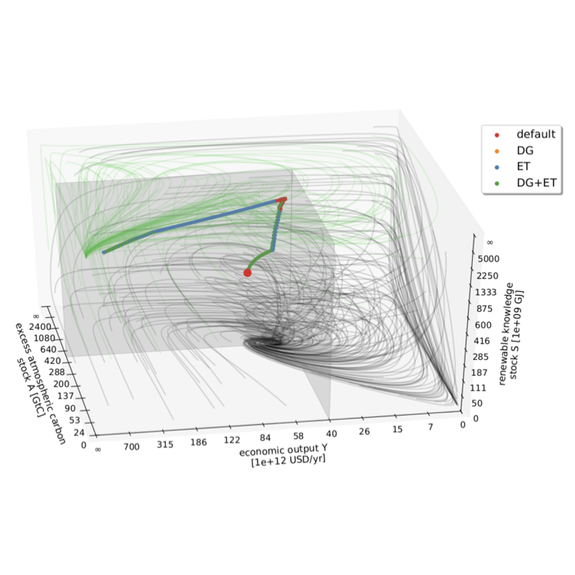
Deep reinforcement learning in World-Earth system models to discover sustainable management strategies
by Strnad FM, Barfuss W, Donges JF, Heitzig J
in Chaos 29, 123122 (2019)
doi
preprint
code
We introduce and analyze a multi-level social network model of interacting governance agents, resource users and renewable resources.
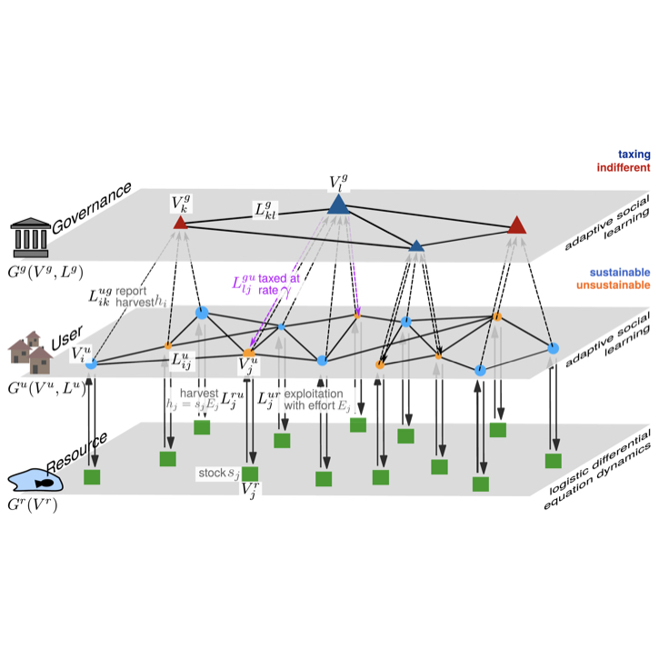
The physics of governance networks: critical transitions in contagion dynamics on multilayer adaptive networks with application to the sustainable use of renewable resources by Geier F, Barfuss W, Wiedermann M, Kurths J, Donges JF in The European Physical Journal Special Topics, 228 11, 2357-2369 (2019) doi preprint
We perform an in-depth study of random assemblies of ellipses in two dimensions.
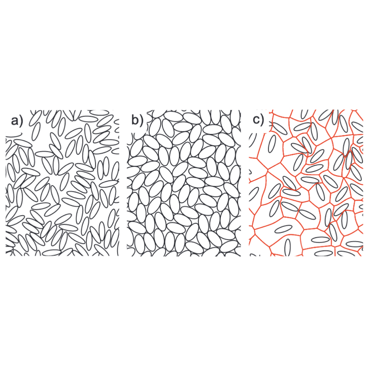
Geometric effects in random assemblies of ellipses
by Lovrić J, Kaliman S, Barfuss W, Schröder-Turk GE, Smith AS
in Soft Matter, 15, 8566-8577 (2019)
doi
preprint
In my PhD thesis, I show how multi-agent reinforcement learning dynamics offer a integrating platform to study social-ecological interactions.

Learning dynamics and decision paradigms in social-ecological dilemmas
by Barfuss W,
PhD Thesis, Humboldt-Universität zu Berlin (2019)
doi
We derive strategy-average multi-agent reinforcement learning dynamics which can handle stateful environments.
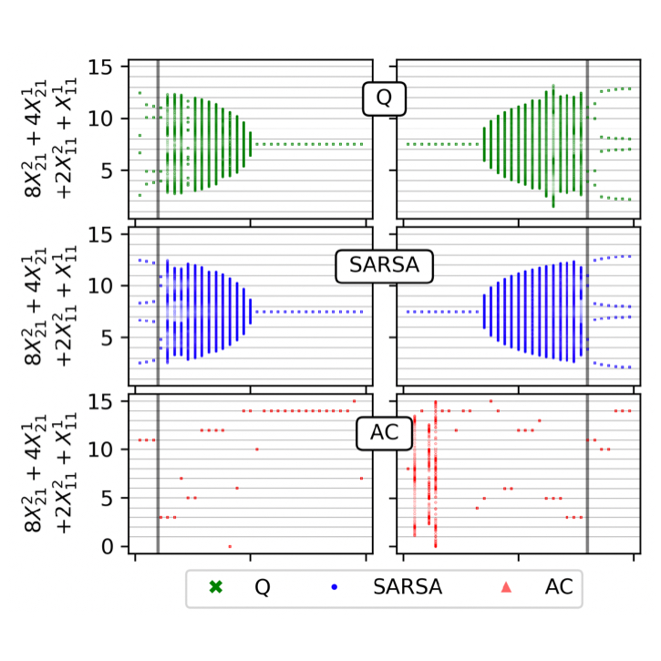
Deterministic limit of temporal difference reinforcement learning for stochastic games
by Barfuss W, Donges JF, Kurths J
in Physical Review E 99, 043305 (2019)
doi
preprint
code
zenodo
2018
We show that no master paradigm exist within the decision paradigms of optimization, sustainability and safety for the governance of a human-environmental tipping element.

When optimization for governing human-environment tipping elements is neither sustainable nor safe
by Barfuss W, Donges JF, Lade SJ, Kurths J
in Nature Communications 9, 2354 (2018)
doi
code
zenodo
We introduce and analyze a conceptual mathematical model designed to reflect a qualitative decision dilemma humanity might currently face in view of anthropogenic climate change.
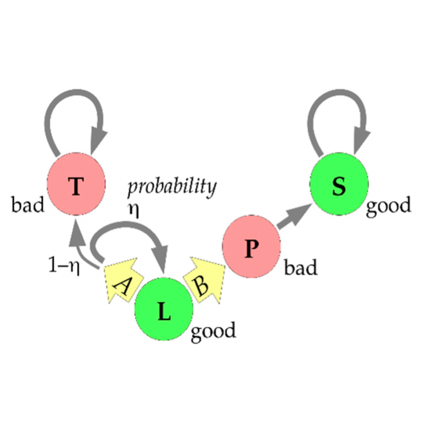
A thought experiment on sustainable management of the Earth system
by Heitzig J, Barfuss W, Donges JF
in Sustainability 10(6), 1947 (2018)
doi
2017
We propose a classification of modern notions of social-ecological resilience from a multi-agentenvironment perspective.
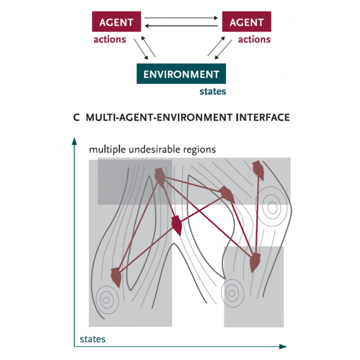
From math to metaphors and back again. Social-ecological resilience from a multi-agent-environment perspective
by Donges JF, Barfuss W
in GAIA 26(S1), 182–190 (2017)
doi
We study human-environmen co-evolution using a stylized model of private resource use and social learning on an adaptive social network.
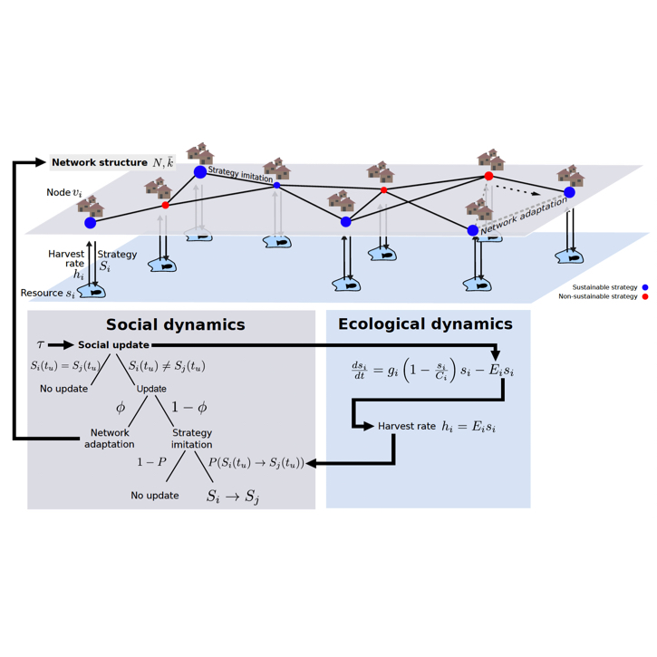
Sustainable use of renewable resources in a stylized social-ecological network model under heterogeneous resource distribution
by Barfuss W, Donges JF, Wiedermann M, Lucht W
in Earth System Dynamics 8, 255-264 (2017)
doi
discussion paper
code
zenodo
2016
We introduce a computationally efficient and statistically robust method to construct global parsimonious probabilistic models from a simple sum of local inverse covariances.
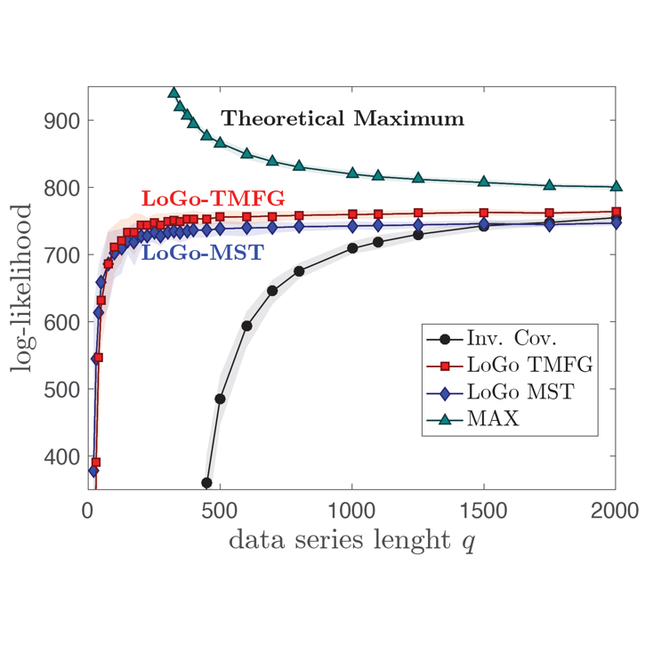
Parsimonious modeling with Information Filtering Networks
by Barfuss W, Massara GP, Di Matteo T, Aste T
in Phys. Rev. E 94, 062306 (2019)
doi